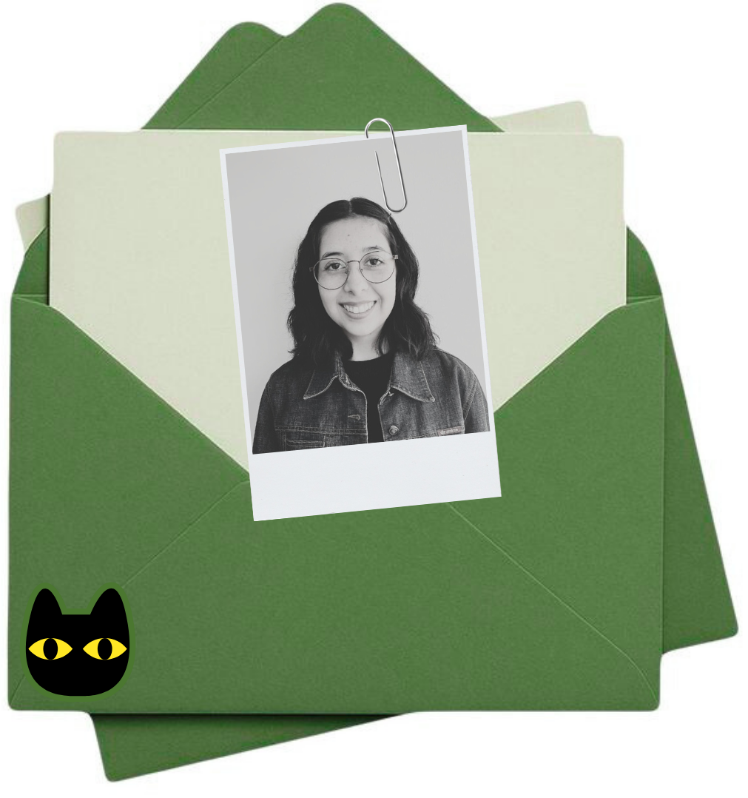

Sobre mí
Hola! soy Janis Sepúlveda, diseñadora enfocada en proyectos phygital y experiencias sensoriales. Mi trabajo combina diseño, tecnología y atención a las experiencias subjetivas de los usuarios.
He desarrollado proyectos de diseño industrial, UX/UI y experimentación digital, siempre con un enfoque en la funcionalidad, estética y la interacción significativa.
Me apasiona traducir experiencias complejas en soluciones tangibles y atractivas, utilizando herramientas digitales y físicas de manera integrada.
